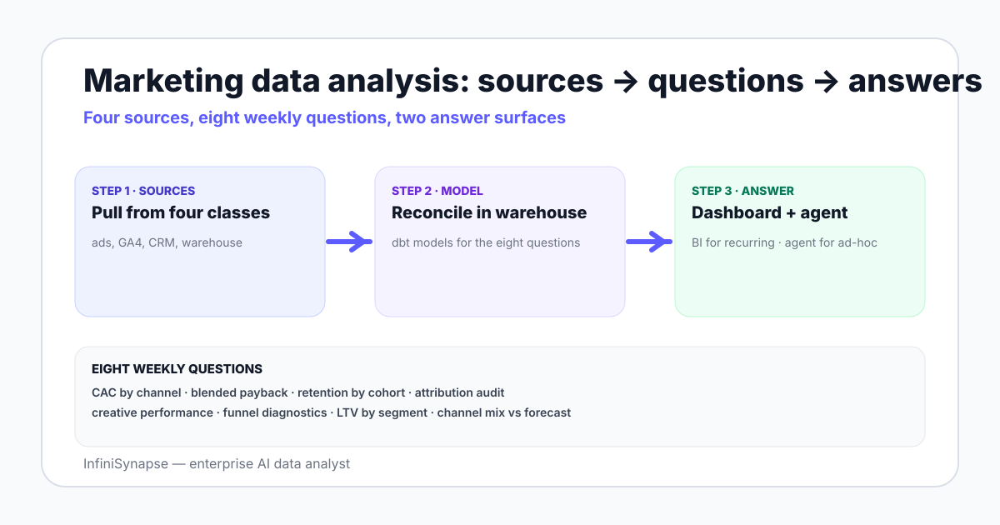

Marketing Data Analysis in 2026: The Working Playbook
A working playbook for marketing data analysis — sources, the eight questions teams answer weekly, attribution choices, tooling ladder, and where an AI data analyst fits the stack.
AuthorInfiniSynapse Research, product and data architecture team
Published2026-06-28 · Last verified 2026-06-28 · Next review 2026-09-28
Evidence baseGoogle Analytics 4 documentation, Meta and Google Ads reporting APIs, dbt and warehouse vendor docs, MMM and incrementality research literature, and field examples across SaaS and ecommerce teams.
Disclosure: This page is published by InfiniSynapse, which sells an AI data analyst used by marketing teams. The playbook is written to apply whether or not you use our product, and links to external sources for every methodology claim.
TL;DR
Marketing data analysis in 2026 means analyzing data across four source classes: ad platforms, web/product analytics (mostly GA4), the CRM, and the warehouse.
Eight questions take up most of an analyst's week — CAC by channel, blended payback, retention by cohort, attribution audit, creative performance, funnel diagnostics, LTV by segment, and channel mix vs forecast.
Attribution choice (last-touch, data-driven, MMM, incrementality) is a policy decision, not a tool choice — pick one primary model and run the others as sanity checks.
The tool ladder runs from spreadsheets to GA4 BigQuery export to a warehouse plus dbt plus BI, with AI data agents now layering on top for ad-hoc questions.
AI data agents shine on the open-ended "why did CAC spike in week 14?" question that does not fit a dashboard — connect the warehouse, bind a small knowledge base of business definitions, and ask in plain English.
Marketing data analysis is the practice of combining ad platforms, web and product analytics, the CRM, and the warehouse to answer a recurring set of weekly questions — CAC, payback, retention, attribution, creative performance, funnel, LTV, and channel mix. The eight questions take up most analyst time. Tooling runs from spreadsheets to warehouse-plus-BI, with AI data agents now handling open-ended exploration.

The four source classes every marketing stack pulls from
Four classes of source feed marketing analysis — covering them sets the ceiling for what an analyst can answer:
Ad platforms. Google Ads, Meta Ads, LinkedIn, TikTok, programmatic. Costs, impressions, clicks, conversions reported by the platform. Pulled via the platform API or an ELT vendor like Fivetran or Airbyte.
Web and product analytics. Predominantly Google Analytics 4, with some teams running Mixpanel, Amplitude, or PostHog. Sessions, events, conversions, and channel groupings.
CRM. HubSpot, Salesforce, or a B2C CRM. Lead and opportunity data, deal stage transitions, customer lifecycle attributes.
Warehouse. Snowflake, BigQuery, Redshift, or a Postgres data warehouse. The reconciled view — every other source lands here through ELT and is modeled with dbt or a transformation layer.
The warehouse is the analytical ground truth. Spreadsheets and platform UIs are points of friction the team graduates from once cross-source questions become weekly.
The eight weekly questions analysts actually answer
Question
What it measures
Where the data sits
CAC by channel
Spend / new customers, weekly, by channel
Ad platforms + warehouse customer table
Blended payback
Days to recover CAC from gross margin
Warehouse — orders, COGS, customers
Retention by cohort
% of cohort still active at week N
Warehouse — events or orders
Attribution audit
Same conversions, three models — sanity gap
GA4 BigQuery export + warehouse
Creative performance
Top creatives by ROAS, normalized by spend
Ad platforms + warehouse
Funnel diagnostics
Step-by-step drop-off, segmented
GA4 / product analytics
LTV by segment
90 / 180 / 365 day LTV by acquisition channel
Warehouse — orders, customers, channel
Channel mix vs forecast
Actual vs planned spend share, by channel
Spreadsheet plan + ad platforms
Eight questions cover the working week of most marketing analysts. The remaining time goes to ad-hoc exploration — "why did paid social CPM jump on Tuesday?" — which is exactly where AI database query agents earn their seat.
Attribution choices in 2026 — pick one, run others as sanity checks
Attribution is a policy decision the team owns, not a tool default. Four credible models in 2026, none of which is the universal answer:
Last-touch. Simple, biased, but auditable. Still useful as a fallback comparison.
Marketing Mix Modeling (MMM). Top-down regression across spend and outcome time series. Best when privacy changes have eroded tracking. Slower iteration; quarterly cadence.
Incrementality testing. Holdout-based geo or audience tests. Most credible but operationally expensive.
The working policy: pick one model as the primary number you report and budget on, run a second as a monthly sanity check, and run an incrementality test on each major channel at least once a quarter. The analyst literature and platform documentation both back this pattern; the only argument is which one is primary.
The tool ladder — spreadsheets to warehouse to AI agent
Each rung adds a tool only when the rung below it has run out of headroom. Skipping rungs is the most common over-engineering mistake.
Where an AI data agent earns the seat in a marketing stack
The dashboard answers the questions you already knew to ask. An AI data agent answers the question you did not know to ask until you saw the dashboard drift. Three concrete patterns:
1. Mid-week anomaly investigation
CAC on paid social spiked 22% on Tuesday. The dashboard shows the spike but not the cause. An AI data analyst with the warehouse connected and a marketing knowledge base bound can break it down by campaign, creative, audience, and landing page in one prompt — minutes instead of a half-day query session.
2. Cross-source attribution audit
The number GA4 reports and the number the warehouse reports disagree by 8%. The agent can quantify the gap, identify the join key where the mismatch lives, and surface the rows that fall on only one side. The output is an evidence trail — plan, SQL, results — the analyst can defend.
3. New-question onboarding for non-analyst marketers
A growth marketer wants to ask "which creatives drove the highest LTV cohort, not just the highest ROAS?" Without an agent, that becomes a BI ticket. With an agent and a bound knowledge base, it becomes a conversation that ends with a chart.
The pattern is not "replace the dashboard" — the pattern is "let the dashboard answer the recurring 80% and let the agent answer the ad-hoc 20% where dashboards cannot be pre-built". See agentic analytics explained for the deeper category framing.
What a working marketing analysis dashboard contains
A dashboard is the standing answer to questions the team already knows to ask. A working marketing dashboard has six standing panels:
Spend and CAC by channel, week-over-week, with a 4-week trailing average overlay.
New customer counts, segmented by acquisition channel, with a forecast line.
Retention curves by acquisition cohort, 4-week trailing.
Creative leaderboard, ranked by ROAS within the last 14 days, with a minimum spend filter.
Funnel diagnostics, top to bottom, with channel and device splits.
Channel mix vs plan, current week, as a stacked bar.
The dashboard ends there. Questions outside these six belong in an analyst session or an AI agent prompt, not in a permanent panel.
A working dashboard is short. The agent handles the long tail.
Ask an open-ended marketing question across your warehouse
Connect Snowflake, BigQuery, or Postgres read-only. Bind a small knowledge base of business definitions — what "active customer" means, which status equals a paid conversion. Then ask one question the dashboard does not answer.
Marketing data analysis is the practice of combining ad platform data, web and product analytics, CRM data, and warehouse data to answer recurring questions about cost, retention, attribution, and channel mix. The work runs from spreadsheets at one end of the maturity curve to a warehouse-plus-BI-plus-AI-agent stack at the other end. The set of weekly questions stays roughly the same across team sizes; only the tooling and depth of analysis change.
What data sources do marketing teams analyze?
Four classes of source: ad platforms (Google Ads, Meta, LinkedIn, TikTok, programmatic), web and product analytics (predominantly GA4 with some Mixpanel and PostHog), CRM systems (HubSpot, Salesforce, B2C CRMs), and the warehouse (Snowflake, BigQuery, Redshift, or Postgres). The warehouse is the reconciled ground truth where other sources land through ELT.
Which attribution model should I use in 2026?
Pick one as the primary number you report and budget on, then run a second as a monthly sanity check, then run incrementality tests on major channels at least once per quarter. Last-touch is simple and biased but auditable. GA4 data-driven attribution is the default inside GA4. Marketing mix modeling fits a privacy-eroded environment. Incrementality is the most credible but operationally expensive.
What tools do marketing teams use for data analysis?
The tool ladder runs from spreadsheets plus platform UIs for solo founders, to BigQuery plus GA4 export plus a notebook for a single analyst, to a full warehouse plus Fivetran plus dbt plus BI stack for a team, with AI data agents now layering on top for ad-hoc analysis. Each rung adds a tool only when the rung below it has run out of headroom.
How does AI help with marketing data analysis?
AI data agents answer the ad-hoc question the dashboard does not — anomaly investigation when CAC spikes, cross-source attribution audits when GA4 and the warehouse disagree, and open-ended exploration for non-analyst marketers. The pattern is to let the dashboard cover the recurring 80% and let the agent handle the 20% where pre-built panels do not fit.
What are the main marketing data analysis examples?
Eight recurring examples cover most weekly work: CAC by channel, blended payback, retention by cohort, attribution audit, creative performance, funnel diagnostics, LTV by segment, and channel mix versus forecast. Each of the eight produces a chart and a small set of follow-up questions the analyst either answers in SQL or routes to an AI agent if exploration is needed.
What should a marketing analysis dashboard contain?
A working marketing dashboard has six standing panels: spend and CAC by channel with a 4-week trailing average overlay, new customer counts by acquisition channel with a forecast line, retention curves by cohort, a creative leaderboard ranked by ROAS, funnel diagnostics with channel and device splits, and channel mix versus plan as a stacked bar. The dashboard ends there — questions outside these six belong in an analyst session.
Methodology and review notes
Last updated: 2026-06-28 · Next scheduled review: 2026-09-28
This playbook synthesizes Google Analytics 4 official documentation, ad platform reporting reference docs, the dbt analytics engineering guide, marketing mix modeling literature, and field experience across marketing teams that operate on Snowflake, BigQuery, and Postgres warehouses. The eight-question pattern and tool ladder reflect observed practice across more than a dozen teams rather than vendor marketing.
Conflict of interest: InfiniSynapse publishes this guide and sells an enterprise AI data analyst. To reduce bias, the page leads with the topic itself, treats InfiniSynapse as one option among many, and links to external sources for every numeric claim.
Update cadence: Reviewed every 90 days for accuracy and link health.